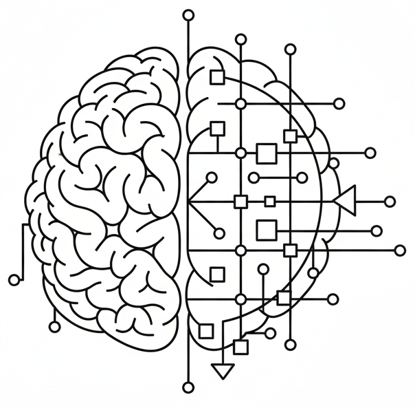

What is reasoning?

This site is based on the paper:
Position: Beyond Reasoning Zombies — AI Reasoning Requires Process Validity
Rachel Lawrence1* Jacqueline Maasch2*
*Equal contribution 1Microsoft Research, Cambridge, UK 2Cornell Tech, New York, NY
Paper Code

Background.
Based on a synthesis of the literature, we provide an operational definition for reasoning as a learnable, rule-governed process. This definition is intended for general use and community discussion. We express this definition in natural language for intuition, mathematical notation for concretization, and pseudocode. See our full paper for further discussion. Our core theses are summarized below.
Core theses.
- Define, then measure. Research concerned with AI reasoning should provide formal operational definitions for the reasoning phenomena under investigation. The construct validity of reasoning evaluation should be explicitly justified with respect to the operational definitions provided.
- Reasoning is a (learnable) rule-based process. Reasoning is a process of exact rule application. Learnable rules unambiguously map reasoning inputs to outputs and can encompass theorems, functions, policies, etc., including rules pertaining to stochasticity, uncertainty, and approximation.
- Rule-based reasoning is valid. The validity of a reasoning process arises from exact rule application, independent of rule selection.
Reasoning is a (learnable) rule-based process.
Definition 1 (Reasoning, informal). The process of selecting and applying sequences of rules that act on prior beliefs and current evidence to obtain principled belief updates in evolving states.
Definition 2 (Reasoner, informal). A goal-oriented decision-maker that implements reasoning.
Note that rules are both learnable and defeasible in the general case, rendering Definition 1 compatible with the bitter lesson and machine learning (Sutton 2019). In special cases, rules may be hard-coded by experts (as in some symbolic methods). Read more about each core component of Definitions 1 and 2 by expanding the terms below.
Process.
Reasoning is a dynamic process, not an output. Thus, reasoning entails $T \geq 1$ hops, stages, time steps, or reasoning steps. This process implies a design component: sequences of rules or actions are chosen by the reasoner according to some justification. The process of selection is where agency, intelligence, or creativity may come into play, while the process of execution necessitates exactness and rigor. Note that it may be perfectly reasonable for the selection criterion to be random selection.We echo Chollet (2019) on the risks of "confusing the process of intelligence" (reasoning, in our case) "with the artifact produced by this process" (e.g., QA responses), ignoring the generating mechanism: "In the case of AI, the focus on achieving task-specific performance while placing no conditions on how the system arrives at this performance has led to systems that, despite performing the target tasks well, largely do not feature the sort of human intelligence that the field of AI set out to build" (original emphasis). Simon (2000) similarly argued that a theory of bounded rationality "will be as much concerned with [...] the quality of the processes of decision, as with [...] the quality of the outcome."
Goal.
The reasoner generally executes a reasoning process to achieve some outcome of interest. This outcome is the goal one is reasoning toward: the answer to a complex question, the solution to a puzzle, the shortest path through a maze, a mathematical proof, the optimal action to take under resource constraints, etc. In distinguishing the goal-directed reasoner from the reasoning process itself, we highlight that the validity of the reasoning process is not necessarily tied to successful attainment of a goal. In practice, we can encode the goal in a stopping rule, where reasoning terminates when the rule is satisfied. We do not restrict our notion of goals to the formal sense used in RL, though it is compatible with this interpretation.Rules.
Collectively, the rule set unambiguously maps the reasoning state at $t$ to the state at $t+1$. In general, rules are selected with some justification prior to deployment. Rules can take the form of algorithms, formulae, theorems, axioms, laws, policies, premises, assumptions, decision boundaries, etc. Rules can be extrinsically imposed on the reasoner (i.e., hard-coded by another individual or collective agent, such as a human or government) or they can be learned autonomously from data on-the-fly. Rules can be fixed or continuously updated in light of new information.Note that rule-governed reasoning and data-driven models are not mutually exclusive, and we reject the false dichotomy between rule-based symbolic AI and contemporary probabilistic deep learning. Learnable rules are essential for tying Definition 1 to modern AI and the bitter lesson (Sutton 2019): rules do not need to be hard-coded by human domain experts, and the future of autonomous reasoning will likely include systems that learn defeasible rules and beliefs on-the-fly.
Evidence.
Evidence is a form of exogenous or extrinsically obtained information. We model evidence as a continuous stream of data that is updated at each step $t$ or at intervals. Current evidence denotes information presented at $t$, along with the historical record: aggregated information up to $k \geq 0$ steps prior to $t$. Evidence may be gained directly through sequential interactions with an uncertain environment (as in online RL, field work in the natural sciences, etc.) or provided without direct collection (e.g., retrospective data collected by another agent). In trivial cases, external evidence is the empty set or is provided at $t=0$ and never updated.Prior beliefs.
While evidence is a form of exogenous or extrinsically obtained information, we model beliefs as a form of endogenous or intrinsically obtained information. Prior beliefs are the outputs of previous reasoning steps, up to step $t-k$ for $t > k \geq 1$. They can be viewed as intermediate conclusions along the reasoning pathway that led to step $t$. Often, they are defeasible: they can be overwritten if proven false (e.g., in backtracking proof search), refined if insufficient, or maintained and aggregated with current beliefs at step $t$. They can also be provided at $t=0$ (e.g., initializing Bayesian priors based on convention when supporting evidence is not yet available).Current beliefs.
Current beliefs denote the conclusions drawn in the transition from $t-1$ to $t$. When $t=T$, current belief is equivalent to the terminal conclusion of the reasoning process. The nature of the terminal conclusion is a defining property of the type of reasoning performed, e.g.: the output of a function in mathematical reasoning, an optimal action in practical reasoning, a moral verdict in moral reasoning, a judiciary decision in legal reasoning, etc.Evolving states.
A reasoner will generally maintain an internal representation of its world state, which updates over time. The existence of an external environment is also implied by our choice to model evidence as a stream of extrinsic signals. However, we note that a well-defined concept of external environment is not relevant in all cases (e.g., in some mathematical reasoning domains). Thus, we place no requirements on the existence or direct observability of an external environment, physical world, etc., and only require an internal representation of the world (i.e., the state). We use the notion of an evolving state broadly to encode all of the above concepts: (1) dynamically updated internal state representations, (2) changing and/or uncertain external worlds, and (3) extrinsic sources of evidence.Finally, we provide our (abbreviated) formal definitions for valid and sound reasoning. For complete formal definitions and pseudocode, see our full paper.
Definition 3 (Reasoning, formal). Let ${S}_t := \langle {B}_t, {E}_t, {R}_t \rangle$ denote the reasoner's state at time step $t$, where ${B}_t$ denotes current belief, ${E}_t$ denotes aggregated evidence up to time $t$, and ${R}_t$ denotes the current set of established rules. Then, reasoning is the iterated application over steps $t$ of rules $r \in {R}_{t-1}$ to prior beliefs ${B}_{t-1}$ and current evidence ${E}_{t}$, by which we obtain dynamically updated states ${S}_t$, and where every output ${B}_{t}$ for $t>0$ is the result of a rule application $r({B}_{t-1}, {E}_{t})$ to the contents of state ${S}_{t-1}$.
Definition 4 (Validity). A transition from state ${S}_t$ to ${S}_{t+1}$ is valid if and only if it arises from the application of a rule $r \in {R}_t$ to components of state ${S}_t$.
Definition 5 (Soundness). A valid transition from state ${S}_t$ to ${S}_{t+1}$ is sound if and only if all premises (as encoded by beliefs, rules, and evidence) are true with respect to external evaluation.
We introduce the concept of reasoning zombies to differentiate valid reasoning from superficial reasoning emulation (e.g., talking like a reasoner with no guarantees that conclusions arose from reasoning rather than memorization, guessing, or some other behavior). This concept is a rough analogue of the classic philosophical zombie (p-zombie) thought experiment (Chalmers 1997).
Definition 6 (Reasoning zombie, informal). A reasoning zombie (r-zombie) is a system that superficially behaves as an autonomous reasoner, but lacks the internal mechanisms necessary for validity.
How to cite this work.
@misc{lawrence2026reasoning,
title={Position: Beyond Reasoning Zombies — AI Reasoning Requires Process Validity},
author={Lawrence, Rachel and Maasch, Jacqueline},
url={https://jmaasch.github.io/reasoning/position.pdf}
}